Robotic-harness · 归档于 2026-11-24
RoboUniverse
RoboUniverse-10K: Toward the Scaling Era of Agentic Robotics via Real-to-Sim Environments
arXivPDF Project pageCode DataModel
归档到 Robotic harness：给“coding agent 写程序控机器人”造了 1 万个带隐藏 verifier 的 harness 任务、一个 benchmark 和一个 SFT 模型；从视频建环境的 Real2Sim 流水线也属于 Agent-centric real-to-sim。
TL;DR
- Problem
- Agentic Robotics（coding agent 写程序控机器人）没有 SWE 那样成千上万个可执行、自动判分的环境：手工 benchmark 每套几十到几百题，还常在同一批任务上训练和测试。
- Idea
- 让 coding agent 把 18 个数据集里的真实机器人视频逐条重建成 Isaac Sim 任务（scene + 参考控制 + verifier），另一个 QA agent 独立审核，通过的打包成 Harbor 任务；agent 只能用 5 个 API，真值和 verifier 都藏起来。
- Result
- 10,807 个环境；留出 500 题的 RoboUniverse-Verified 上 GPT-6.2 Astra 85.8%、Claude Opus 5.5 76.8%，开源模型 2.6–10.0%；用约 17K 条 GPT-6 Astra 轨迹 SFT Qwen3.6-35B-A3B，0.8% → 21.2%（Table 2、3）。
Problem
coding agent 控机器人缺的是环境：每个任务都要人搭场景、写判分，规模停在几百，还常在考题上训练
Running example · 后面每个 stage 都跟着它走
盖锅盖（task 001455_lid_cover）（Fig. 2、Fig. 4、项目页）：一段 DROID 真机视频，Franka 把桌上的锅盖拿起来盖到锅上，原标注 "Pick up the lid and close the pot"，关键帧 start #0 · action #167 · end #278 → 想要：① 一个 Isaac Sim 任务 "Cover a pot with its lid."，能重置、只能靠物理接触完成、由隐藏 verifier 判 0/1；② 上万个这样的任务，训出一个在没见过的任务上也会做的开源 coding agent。
flowchart LR IN["例子输入
DROID 盖锅盖视频"]:::example IN --> A1["手工 benchmark
LIBERO、RoboTwin 2.0"] A1 --> AX["人搭场景、写 success
每套 42–365 题"]:::gap IN --> B1["Agent 造任务
Real2Gym、EmbodiedSWE"] B1 --> BX["能自动造，但量小
24–428 题"]:::gap IN --> C1["Agent 后训练
CaPtain、PEAR"] C1 --> CX["训练和测试同一批
CaPtain 训 40 测同 40"]:::gap IN --> D1["开源 coding agent
Qwen3.6-35B-A3B"] D1 --> DX["不建运动学模型
没做完就报完成
500 题只成 0.8%"]:::gap
第 1–3 条的数字是各家自己的任务数（Table 5；BEHAVIOR-1K 定义了 1,000 个活动，但实验只用 3–100 个），论文没拿这条视频在它们上面跑，“这条视频进不了、或进了也没法测泛化”是按它们的造法推断（§1、§5）。第 4 条：0.8% 是基座在 500 题上的总成功率（Table 3）；“不建模型、没做完就报完成”来自新解出单臂题的行为统计（Table 4：建模型 3/21，失败题报成功约 8/21）和关抽屉案例（Fig. 10），盖锅盖这一题论文没单独报。
根本问题：机器人任务没法像 SWE 那样从 repo 和 pull request 自动挖：每个任务都要一个能交互的物理场景加一个判分器，造价高，于是环境少、没有 held-out，开源模型也没有可训的数据。 这篇的切入点：照 Scale-SWE 挖真实 PR 的思路改挖真实机器人视频：coding agent 自动重建、独立 QA agent 审核，量产 Harbor 任务，再从同一流水线留出 500 个没见过的任务当考题。
Related work
| 相关工作 | 解决什么 | 怎么解决 | 和本文的区别 |
|---|---|---|---|
| 同一问题 · 别的解法 | |||
| 手工 manipulation benchmark LIBERO、RoboCasa365、RoboTwin 2.0、RoboDojo、BEHAVIOR-1K | 评测 visuomotor policy（VLA） | 人搭场景、人写 success 条件 | 每题靠人造、每套几十到几百题；episode 一检测到成功就结束 → 本文从视频自动造 10,807 个，agent 只能自己看相机判断做完没有 |
| LLM / 视频生成的任务集 GenSim、Video2Policy、PyRUA-DataFarm、Real2Gym | 自动生成 sim 任务，或从视频重建 | LLM 写任务代码；agent 从视频建 scene | 止步几百题（Real2Gym 24 个，只用来攒 skill、不训模型），GenSim、Video2Policy 都没有双臂 → 本文 6,675 个双臂任务，还加了独立 QA agent 审 fidelity、replay、verifier |
| Coding-agent 机器人 benchmark（本文所属的一族） Embodied First Exam、Gym-Anything for Robotics、EmbodiedSWE、CaP-X | 专门给 coding agent 出机器人题 | EFE、Gym-Anything 把 verifier 对 agent 隐藏；Gym-Anything 另给 175 个训练环境 | 训练集小或没有（EFE 0 个，Gym-Anything 175 个但只在 2 个上训）→ 本文沿用 EFE + Harbor 格式，给 10,307 个训练环境，再从同一流水线留 500 题 |
| 机器人 coding agent 后训练 CaPtain、AgenticRoboRL（SFT → RL）、PEAR（sim 里 RL） | 把开源模型训成能控机器人的 agent | 在 sim 任务上 SFT 和 / 或 RL | 只在几百个任务上训，常在同分布上测（train on test）→ 本文在万级任务上 SFT、在没见过的 500 题上 zero-shot 测；但本文还没做 RL |
| 相似做法 · 别的问题 | |||
| SWE 环境扩展 SWE-Gym、Scale-SWE；蒸馏、RLVR | 给 coding agent 造大量可执行、自动判分的环境 | 从 repo 和真实 pull request 自动建任务，再蒸馏或 RL | 软件任务能从 repo 自动挖，机器人任务要物理场景和判分器 → 本文把“挖 PR”换成“挖真实机器人视频” |
来源：论文 §1、§5 Related Work 和 Table 5，未另行检索。论文没在这些系统上跑本文的考题，只比了任务规模和属性（Table 5）。
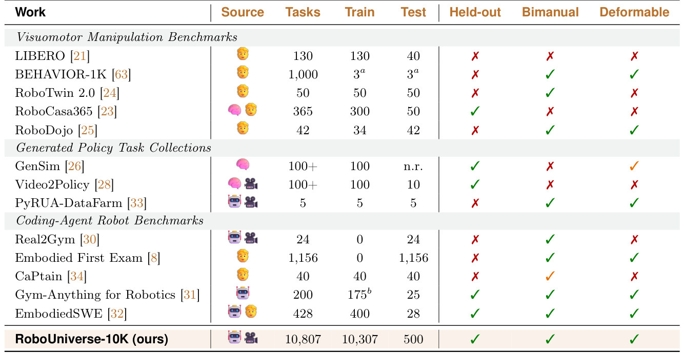
怎么读这张图
- Source 列：图标是人工、LLM、agent、真实视频；本文是 agent + 真实视频。
- Tasks / Train / Test：本文 10,807 / 10,307 / 500；别家最多 1,156 题（EFE，0 个训练），有训练集的最多 400（EmbodiedSWE）。
- Held-out / Bimanual / Deformable：三个都 ✓ 的还有 Gym-Anything for Robotics（200 题）和 EmbodiedSWE（428 题），规模比本文小两个数量级。
Level 1 · Big picture
把真实机器人视频量产成可判分的 Harbor 任务：拿来考 coding agent，也拿来训它
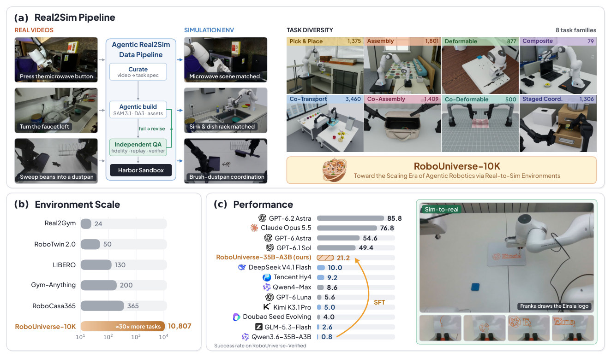
怎么读这张图
- (a) 左半：REAL VIDEOS（按微波炉按钮、拧水龙头、扫豆子）→ Agentic Real2Sim Data Pipeline：Curate（video → task spec）→ Agentic build（SAM 3.1 · DA3 · assets）→ Independent QA（fidelity · replay · verifier，fail → revise 回到 build）→ Harbor Sandbox → SIMULATION ENV。盖锅盖走的就是这条线。
- (a) 右半 TASK DIVERSITY：8 个 task family 和任务数；上排单臂（Pick & Place 1,375、Assembly 1,801、Deformable 877、Composite 79），下排双臂（Co-Transport 3,460、Co-Assembly 1,409、Co-Deformable 500、Staged Coord. 1,306）。盖锅盖属于 Assembly。
- (b) Environment Scale（对数轴）：Real2Gym 24、RoboTwin 2.0 50、LIBERO 130、Gym-Anything 200、RoboCasa365 365，本文 10,807，标注 ≈30× more tasks。
- (c) Performance：RoboUniverse-Verified 上 13 个模型的成功率；橙色箭头 SFT 把 Qwen3.6-35B-A3B 从 0.8 拉到 21.2。右边 Sim-to-real：同一模型在真 Franka 上画 Einsia logo。
flowchart TD I["真实机器人视频
DROID：盖锅盖"]:::example I --> M["Agentic Real2Sim
+ 独立 QA
001455_lid_cover/"]:::win M --> T["10,307 个训练任务
Astra 跑约 17K 条轨迹"] M --> V["500 道 Verified 考题
GPT-6.2 Astra 85.8%
开源 ≤ 10%"] T --> S["SFT Qwen3.6-35B-A3B
Verified 0.8% → 21.2%"]:::win
Level 2 · Stages
5 个 stage，加一个贯穿的 harness
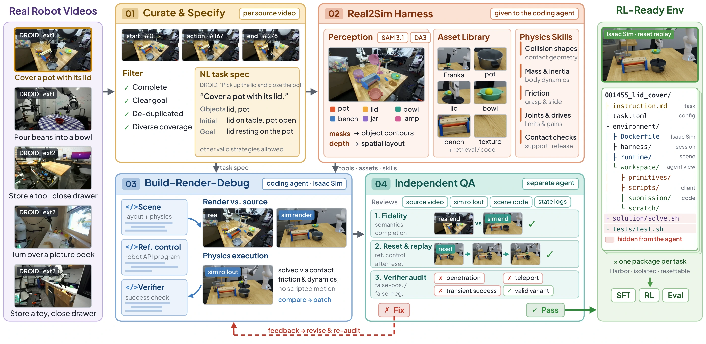
怎么读这张图
- 最左 Real Robot Videos：5 段 DROID 视频（ext1 / ext2 是两个外部相机），第一段就是 Cover a pot with its lid。
- 01 → 02 → 03 → 04：先写 task spec（01），把感知、asset、物理 skill 交给 coding agent（02），agent 在 Isaac Sim 里写、渲染、调试（03），另一个 agent 独立审（04）。
- 红色虚线 feedback → revise & re-audit：04 判 ✗ Fix 就带反馈回到 03 重做。
- 最右 RL-Ready Env：✓ Pass 后每个任务一个包（001455_lid_cover/），Harbor · isolated · resettable，供 SFT、RL、Eval 用。
flowchart TD S1["1 · Curate & Spec
#quot;Cover a pot
with its lid.#quot;"] S1 --> S2["2 · Agentic Build
scene + control
+ verifier"] S2 --> S3["3 · Independent QA
fidelity + replay
+ audit"] S3 -.->|"✗ Fix：带诊断退回"| S2 S3 -->|"✓ Pass"| H["Harbor 任务 × 10,807
001455_lid_cover/"]:::win H -->|"留出 500"| S4["4 · RoboUniverse-Verified
lid_cover 类 12 题"] H -->|"10,307 训练"| S5["5 · SFT
Assembly 4.4% → 42.6%"]:::win S5 -.->|"zero-shot 考"| S4 click S1 href "#stage-1" click S2 href "#stage-2" click S3 href "#stage-3" click H href "#stage-all" click S4 href "#stage-4" click S5 href "#stage-5"
点击 stage 展开 Level 3 细节。绿色的 Harbor 任务包是 stage 3–5 共用的 harness，见 Harness。
全流程清单：造环境 11 步 · 每局 9 步 · 训练 5 步（论文 + 代码核对）
造环境（每道题一遍）
| # | 步骤（拧杯子） | 谁做 | 论文 | 代码 |
|---|---|---|---|---|
| 1 | 挑视频、五层去重 | 论文没说 | §2.2–2.3 | ✗ |
| 2 | 看视频写任务说明 | coding agent | §2.3 | 只有 instruction.md |
| 3 | 用 SAM 3.1、DA3、素材库写 scene.py | builder | §2.3、§C.2 | scene.py ✓ · 工具 ✗ |
| 4 | 源帧和渲染并排比，改到像 | builder | §C.2 | compare_views.py（2 包） |
| 5 | 写机器人接口：reset / observe / step / 导出证据 | builder | §C.2 | env_backend.py ✓ |
| 6 | 写参考动作（7 步） | builder | §2.3 | reference_controller.py ✓ |
| 7 | 写判分 + 9 个自测 | builder | §2.3 | verify.py · verifier_fixtures.py ✓ |
| 8 | GPU 队列上跑 design / run / replay / probe | builder | §C.2–C.3 | build_and_replay.py ✓ · 队列 ✗ |
| 9 | 模板检查，打包成 Harbor 任务 | 固定脚本 | Fig. 4 | delivery_template ✗（只被引用） |
| 10 | 独立 QA：看视频、重放、测判分、修 | QA agent | §2.3、§A.3、§C.3 | 提示词节选 · quality/ ✗ |
| 11 | 人工核验（只查 500 道考题） | 10 位专家 | §B.1 | heldout500.csv · 事后改过 38 个判分 |
每局（评测或采数据；代码全发布）
| # | 步骤 | 代码 |
|---|---|---|
| 1 | 校验压缩包、下载机器人模型、生成 agent / oracle 密钥、放 3 个 Dockerfile、sim CPU ≥ 8 | evaluate.py |
| 2 | harbor run -p 任务 -a agent -e docker | evaluate.py；自家模型用 inference.py |
| 3 | sim 启动：载场景、自生成 verifier 密钥、开 8000 端口；健康后才开 main | sidecar.py · service.py |
| 4 | agent 用 roboenv 发请求 | client.py · service.py |
| 5 | 每次 step 前查：在范围内、基于最新一步、一次 ≤ 256 步、总 ≤ 3,000 步、≤ 2 h | session.py |
| 6 | 收卷：main 里 kill -9 -1，sim 里 sidecar collect | task.toml |
| 7 | sim 里用 verifier 密钥 grade：导出证据 → verify.py → result.json | sidecar.py · session.py · verify.py |
| 8 | 判分容器核对一致，写 reward.txt | tests/grade.py |
| 9 | 汇总成功率；基础设施出错的局单列 | summarize.py |
训练（训练代码 ✗）
| # | 步骤 | 出处 |
|---|---|---|
| 1 | GPT-6 Astra (Medium) 在训练环境做题：约 17K 条、0.79B tokens | §4.1 |
| 2 | 转成 Claude Code 多轮 tool-use 格式 | §4.1 |
| 3 | 只留成功的局 | 代码 README（论文没写） |
| 4 | 全参数 SFT Qwen3.6-35B-A3B 语言主干，冻结视觉，约 1,500 H100 小时 | §4.1 |
| 5 | 部署：inference.py 用 SGLang 起服务，接 Claude Code，thinking 关 | 代码 |
会“动脑子”的只有 builder、QA 两个 agent，SAM 3.1、DA3，Isaac Sim 和 10 位专家；其余是脚本、模板和检查清单。
Level 3 · Details
每个 stage 的细节
Stage 1 Curate & Spec 真实机器人视频 → 去重后的 concrete task + 自然语言 task spec
- Why：多源数据集重复多、粒度乱；视频要变成“只规定结果、不规定动作”的任务说明。
- 过滤：留执行完整、目标清楚的 episode，去掉重复和近重复场景，同时保住各 task family 的覆盖（§2.3）。
- 五层去重：Embodiment → Taxonomy → Concrete Task → Layout → Trajectory；只有交互类型、场景或被操作物体有实质变化才算新任务，视角、外观、小摆放、初始位姿、轨迹不同都算重复，每个 concrete task 留一个代表（§2.2）。
- 写 spec：coding agent 看视频，找出被操作物体、初始状态、期望结果，写一句指令；保留核心目标和必要约束，允许任何合法策略（§2.3）。
- 来源：18 个数据集。单臂 Franka 4,132（DROID 2,591、BridgeData V2 465、BC-Z 432、RT-1 302…），双臂 AgileX 6,675（RoboDesk 3,292、RoboCOIN 1,758、GM100 1,038…）（§A.2）。
flowchart LR a["过滤
完整 · 目标清楚"] --> b["五层去重
留一个 concrete task"] b --> c["写 task spec
objects · initial · goal"]
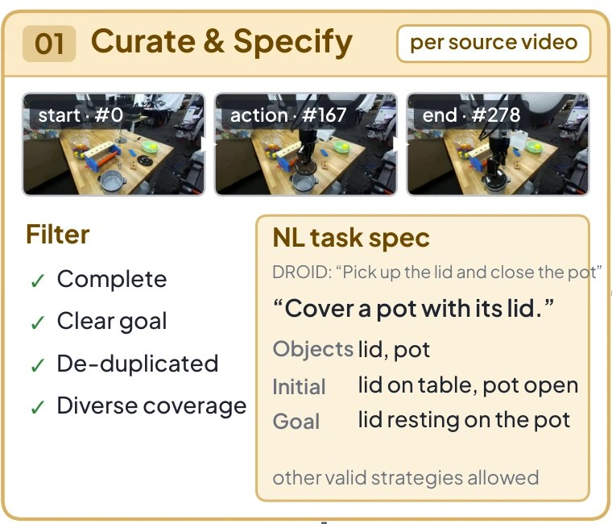
- Source clip：同一段 DROID 视频的三帧 start #0、action #167、end #278。
- Filter：Complete、Clear goal、De-duplicated、Diverse coverage 四个勾。
- NL task spec：灰字是 DROID 原标注，下面改写成 “Cover a pot with its lid.”；Objects、Initial、Goal 三行，最后一行 other valid strategies allowed。
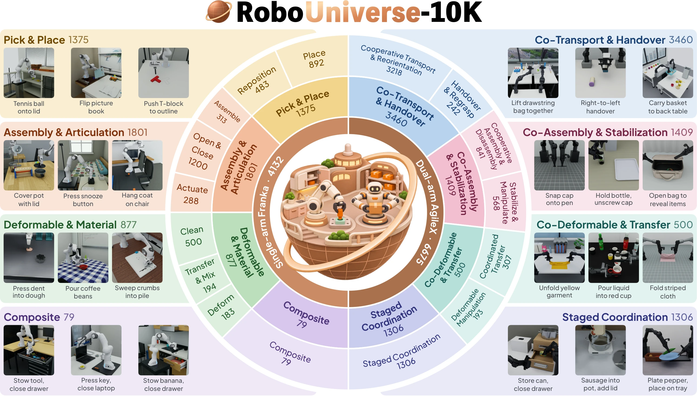
- 内圈：左半 Single-arm Franka 4,132，右半 Dual-arm AgileX 6,675。
- 中圈 8 个 family：单臂 Pick & Place 1,375、Assembly & Articulation 1,801、Deformable & Material 877、Composite 79；双臂 Co-Transport & Handover 3,460、Co-Assembly & Stabilization 1,409、Co-Deformable & Transfer 500、Staged Coordination 1,306。
- 外圈细类：如 Assembly & Articulation = Assemble 313 + Open & Close 1,200 + Actuate 288。
- 四角例图：Assembly & Articulation 的第一张就是 “Cover pot with lid”。
Running example 在这一步
DROID 片段过了四个勾 → spec "Cover a pot with its lid."，Objects lid, pot，Initial lid on table, pot open，Goal lid resting on the pot → 归入单臂 Assembly & Articulation。
Stage 2 Agentic Build（Build–Render–Debug） task spec + 源视频 → Isaac Sim 里的 scene、参考控制程序、verifier
- Why：每个任务都要一个物理上说得通的交互场景和一个判分器，手工做正是规模瓶颈。
- 工具：Real2Sim harness 给 agent 三样：Perception（SAM 3.1 掩码 → 物体轮廓，DA3 深度 → 空间布局）、Asset Library（预建 mesh 和纹理，缺的走检索或程序生成）、Physics Skills（碰撞几何、质量惯量、摩擦、关节限位、驱动参数，和支撑 / 接触 / 释放检查）（§2.3）。
- 三份代码：scene、reference control program、verifier；对比 sim 渲染和源视频、看物理执行反馈，反复改，直到机器人靠真实接触、摩擦、动力学完成任务，而不是脚本动作（§2.3）。
- “像”的标准（§C.2）：保留外观、物体关系和任务含义，“exact coordinates, dimensions and timing are unnecessary”；DA3 只给相对深度；质量、摩擦等参数由 agent 按 physics skill 设，论文没说用真机数据标定。
- 禁令（§C.2）：不许把物体焊到手上、改写物体位姿、直接驱动目标、加完成任务的外力、关掉物体动力学、逐帧回放关节；碰撞体要贴合可见表面。
- 指令和 verifier 对齐（§C.2）：几句话说清什么要发生可见变化、要不要松手；verifier 接受合理范围的结果，不能因为参考解恰好这样做就规定精确位移、朝向或时长。
flowchart TD a["感知
SAM 3.1 掩码 + DA3 深度"] --> b["选 asset、搭 scene
Franka、pot、lid、bench"] b --> c["写 control + verifier
都走 env.step(action)"] c --> d["渲染比对 + 物理 rollout
真抓真盖，不许脚本"] d -->|"不像 / 没做成"| b
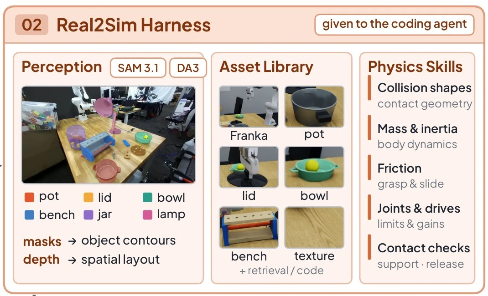
- Perception：SAM 3.1 和 DA3 跑在源帧上，图例 pot、lid、bowl、bench、jar、lamp；masks → object contours，depth → spatial layout。
- Asset Library：Franka、pot、lid、bowl、bench、texture；底注 + retrieval / code。
- Physics Skills：Collision shapes、Mass & inertia、Friction（grasp & slide）、Joints & drives（limits & gains）、Contact checks（support · release）。
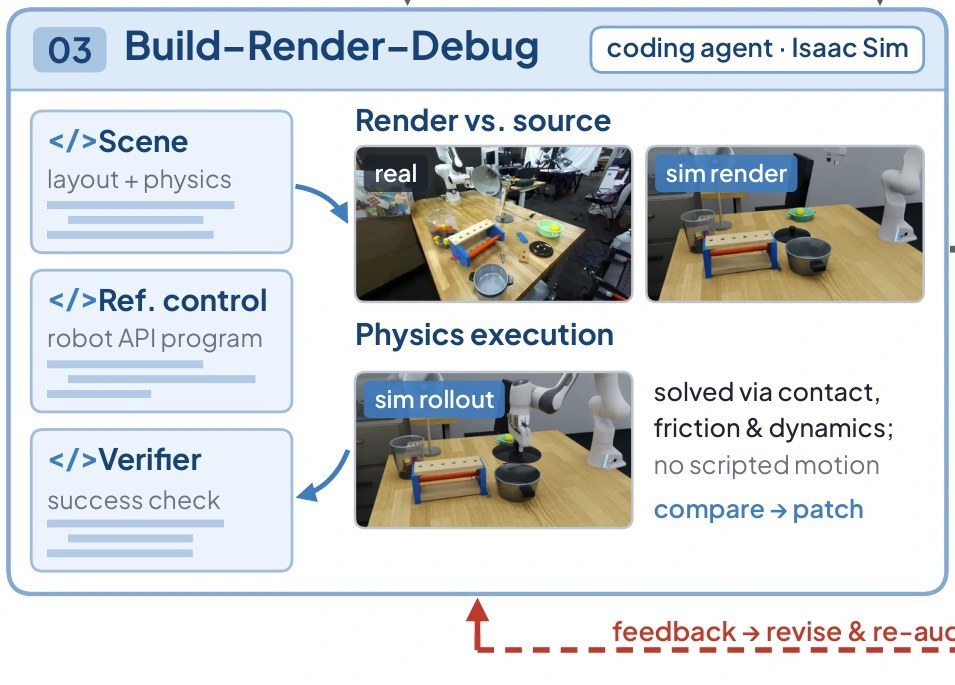
- 左列三份代码：Scene（layout + physics）、Ref. control（robot API program）、Verifier（success check）。
- Render vs. source：左 real 是 DROID 真帧，右 sim render；按差异改 scene。
- Physics execution：sim rollout 必须 “solved via contact, friction & dynamics; no scripted motion”，compare → patch。
- 底部红色虚线：QA 的 feedback 从这里回来。
数据样例（非论文）· 拧杯子 000247 实际怎么搭：看到什么 → 怎么改
flowchart TD b1["1 · 看视频估尺寸
SAM 3.1 没找到杯子
拿 Franka 当尺子"]:::example b1 --> b2["2 · 写 scene.py
高约 27 cm · 0.32 kg
机器人前方 54 cm"] b2 --> b3["3 · 渲染，和源视频帧比
哪里最不像先改哪里"] b3 -.->|"不像：改数字"| b2 b3 --> b4["4 · 跑 7 步参考动作
看两路视频
+ 打印的杯子位姿"] b4 -.->|"没做成"| fx["改做法
抓法 · 动作 · 碰撞形状"] fx -.-> b4 b4 --> b5["5 · 写判分 + 自测
转 ≥ 0.35 rad · 9 个用例"] b5 --> b6["6 · 交给 QA
见 Stage 3"]:::win
- 没有误差信号：README 写 “Dimensions are estimated from the video and the Franka, not from metric depth”；差多少靠 builder 看图判断，停在“看着像 + 真靠接触做成”。
- 改数字的痕迹：scene.py 里的
reflect_clutter把桌上杂物整体沿 Y 翻了一次，杯子没动（为什么翻是推断：对比时发现左右反了）。 - 改做法的痕迹（另一包，双臂叠布垫）：attempt 2–7 失败，attempt 8 第一次成：没夹牢就再夹一次；机械臂底座垫高 12 cm，让手腕一直朝下。拧杯子的调参记录没随包发布。
数据样例 · 关节和布料：不是单独一步，搭 scene 时按任务需要加
| 6 个样例包 | 物理 | 怎么设的 |
|---|---|---|
| 拧杯子 000247 | 纯刚体 | 杯盖和杯身当一体（“lid is modeled as secured”） |
| 关冰箱门 002491 | 1 个竖直转轴，0–105° | 代码拼的 8 kg 钢板（宽 0.68 m）；铰链摩擦借全场共用的角阻尼 0.25；无马达、无回弹、无磁吸；README：“ordinary vertical pin” |
| 毛巾抓成堆 000045 | PBD 粒子布料（125×101 点） | 见下表 |
| 双臂叠布垫 agx…1b45 | PBD 粒子布料 | 见下表 |
| 双臂放橘子 agx…002eb | 纯刚体 | 检查：不许有关节连着橘子或篮子 |
| 双臂交接 agx…0741 | 纯刚体 | — |
| 布料参数（都是估的） | 毛巾 | 布垫 |
|---|---|---|
| 抗拉 stretch | 12000 | 800 |
| 抗弯 bend | 0.008 | 0.03 |
| 抗剪 shear | 120 | 500 |
| 弹簧阻尼 | 0.08 | 0.12 |
| 摩擦 | 0.8 | 0.75 |
| 质量 | 0.12 kg | 0.18 kg |
| 结果 | 抓 3 次才成（视频 1 次）；穿进桌面 5.4 mm 仍判成功 | attempt 8 才成；README：“estimates, not metric video measurements” |
| Franka 任务名标签（catalog.csv，4,132 题） | 题数 | 占比 |
|---|---|---|
| 机构：door_hinge_or_open_close 753 · press_switch 252 · drawer_slide 196 | 1,201 | 29% |
| 软体：fold_spread 63 · cable_routing 63 · dough_deformation 54 | 180 | 4% |
双臂包里的固定关节只把机械臂底座钉在桌上。标签按任务含义分，不代表实际用了哪种物理；线缆、面团没有样例包。判分跟着变：门看门缝 ≤ 12 mm；Isaac 5.1 拿不到布料接触力，布料题只看形状。
Running example 在这一步
感知分出 pot、lid、bowl、bench、jar、lamp；asset 库里拿到 Franka、锅、盖、碗、木架和桌面纹理；agent 写 Scene / Ref. control / Verifier，对着 DROID 真帧调布局；rollout 里 Franka 真的抓起锅盖盖到锅上。
Stage 3 Independent QA builder 的环境副本 → Pass 的 Harbor 任务包，或带诊断退回
| 查什么 | 谁来查 | 数值标准 |
|---|---|---|
| 每局 0 / 1 | 判分程序读仿真记下的数字，不用模型 | 有：固定阈值 |
| 判分准不准 | 把改过的记录喂给判分程序 | 有：每个用例有预期结果 |
| 能否重复 | reset 后重放参考控制 | 有：两次都得 1 |
| 场景像不像、物理合不合理 | QA agent（语言模型）看两段视频 | 没有 |
| 人工 | 10 位专家，只查 500 道考题 | 4 条清单；事后仍改过 38 个判分（dataset README） |
- Why：builder 自己写的 verifier 可能被钻空子，场景可能和视频对不上，参考解可能不可复现。
- 证据：另一个 QA agent 看四样：source video、sim rollout、scene code、state logs（§2.3）。
- ① Fidelity：任务语义、关键空间关系、物理完成是否和视频一致；如 pick-and-place 要查接触后物体跟着夹爪走、松手后稳在支撑面上（§A.3）。
- ② Reset & replay：reset 后重放保存的控制指令，结果要一样。
- ③ Verifier audit：既试应该被拒的失败，也试另一种合法完成；专防 penetration（穿模）、teleportation（瞬移）、transient success（短暂成功）。
- 修：QA agent 修 scene / controller / verifier 并重跑暴露问题的 case、留证据（§A.3）；正文说不过的退回 builder 带诊断修订、再审（§2.3）。
- QA prompt（§C.3）：逐条把 verifier 谓词对到指令子句；回归测试包括不动作、起始就已完成、错物体、部分或短暂完成、证据不全、合法的替代完成。
flowchart TD e["builder 交来的环境
scene + control
+ verifier"] --> f["① Fidelity
real end ≈ sim end"] f --> g["② Reset & replay
重放后仍盖上"] g --> h["③ Verifier audit
穿模、瞬移、短暂成功 → 判 0"] h -->|"全过"| p["Pass → Harbor 包
001455_lid_cover/"]:::win h -.->|"有缺陷"| x["Fix
修完重跑、再审"]:::gap
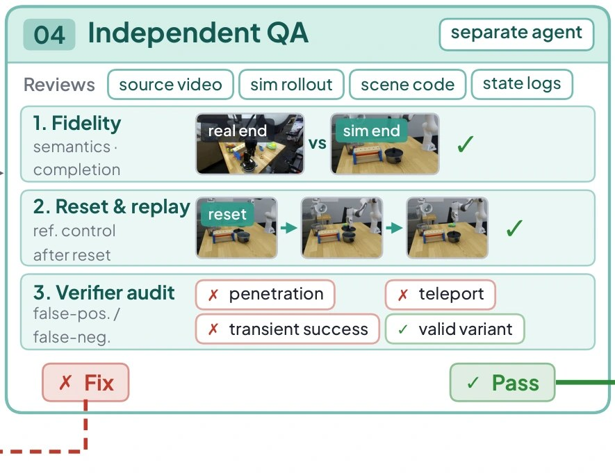
- Reviews 一行：source video、sim rollout、scene code、state logs。
- 1. Fidelity：real end 对 sim end，打 ✓。
- 2. Reset & replay：reset 后三帧重放参考控制，打 ✓。
- 3. Verifier audit：false-pos / false-neg 两向：✗ penetration、✗ teleport、✗ transient success 必须判失败，✓ valid variant 必须判成功。
- 底部：✗ Fix 沿红线回 03；✓ Pass 进 RL-Ready Env。
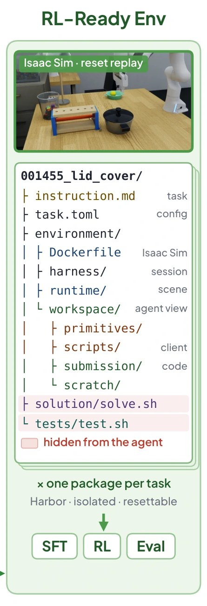
- 目录树：instruction.md（task）、task.toml（config）、environment/（Dockerfile = Isaac Sim、harness/ = session、runtime/ = scene、workspace/ = agent view）。
- workspace/ 里：primitives/、scripts/（client）、submission/（code）、scratch/，这是 agent 能看到的部分。
- 红底两行：solution/solve.sh 和 tests/test.sh，hidden from the agent。
| verifier 条件 | 阈值 |
|---|---|
| 把手朝向变了 | 净变化 ≥ 0.35 rad |
| 杯子还立着 | 杯底离桌 ≤ 12 mm，倾斜 ≤ 0.25 rad |
| 松手且静止 | 最后 0.35 s 内 ≤ 0.025 m/s、≤ 0.35 rad/s |
| 是接触转动的 | 受力接触链中转 ≥ 0.01 rad（接触阈值 0.08 N） |
| 没有瞬移 | 位姿跳变 ≤ 0.02 m + 4 m/s·Δt，≤ 0.10 rad + 15 rad/s·Δt |
| 期望判定 | 改写已录轨迹（不重跑仿真） |
|---|---|
| failure | 杯子不动；杯子转了但手没碰到；转完后沉下 7 cm、离开桌面 |
| inconclusive | 缺朝向数据；缺最后 0.35 s 的数据 |
| success | 时间原点平移；手撤开后才合爪；降采样到 30 Hz；降采样 + 平移 |
000247_rotate_twist，Verified 500 之一：“Turn the tall tan travel mug … so its side handle faces a noticeably different direction. Leave the mug standing on the table and release it.” 上表来自包里的 evidence.md，下表来自 verifier_fixtures.py。- build_and_replay.py --mode complete：reset → 参考控制 → 判分 → reset → 重放保存的控制 → 再判分 → 接口探测。
- 自述局限：能拒明显瞬移，但 “cannot rule out every penetration or tunneling event”；外观和物理合理性仍要看两路视频。
- 6 个样例：接口文件同一套模板；检查脚本每题不同（verifier_fixtures.py、check_verifier.py、audit_physics.py…）；QA 的 quality/ 记录没随包发布。
Running example 在这一步
real end 和 sim end 对上 ✓；reset 后重放参考控制，锅盖仍盖上 ✓；穿模、瞬移、短暂成功都该判失败，换一种合法盖法该判成功 → Pass，打包成 001455_lid_cover/。
Harness Harbor 任务包和执行–判分隔离 贯穿 stage 3–5：打包、采训练轨迹、考试都在这里跑
- Why：让 agent 像在真机上一样只能靠传感器判断结果；挡住读特权状态和钻空子；支持快速 reset 和并行 rollout（§2.1）。
- 组成：指令 + Isaac Sim 场景 + 机器人观测 / 控制接口 + 任务 verifier，打包成 Harbor 格式（Terminal-Bench 用的容器化评测框架）（§2.1）。
- 5 个工具：agent 在 sandbox 终端写、跑 Python，只能用 describe / observe / step / step_chunk / finish 碰仿真（Table 1；§A.1 另有 save_images）；只有 step 和 step_chunk 推进仿真，模型思考时仿真暂停。
- 只收关节目标：没有 IK 服务。Franka 7 个关节角 + 2 个手指位移，20 Hz 控制 / 240 Hz 物理；AgileX 每臂 6 角 + 2 指、共 16 通道，15 Hz / 240 Hz（§A.1 的两个代表任务）。
- 藏起来的：物体真值状态、参考解、verifier；没有 success flag、进度信号；一次机会，不能 reset、不能查中间分；有步数和 wall-clock 预算。
- 判分：finish() 或预算用完后，verifier 读执行日志和最终仿真状态给 0 / 1；finish 不加 settling 步，要等物体停稳得自己多走几步（§A.1、§C.1）。
- 训练也走这条路：GPT-6 Astra 在 10,307 道训练题上照样做题，只留得 1 分的局（代码 README）做 SFT：约 17K 条，0.8% → 21.2%；每局的 0 / 1 可直接当 RL 奖励，但论文没做 RL（§4.1）。
flowchart LR A["Coding agent
写 control.py"] --> B["5 个 API → Isaac Sim
只给关节目标"] B --> D["隐藏 verifier
finish 后判 0 / 1"]:::win
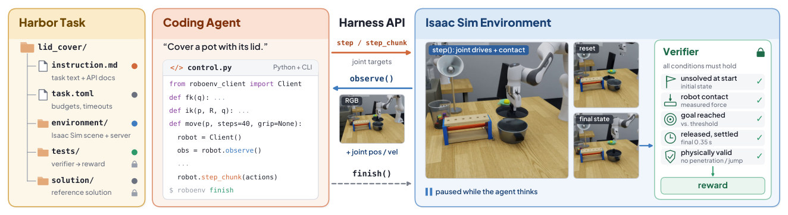
| 符号 | 白话 | 本例的值 |
|---|---|---|
q | 机器人现在各个关节的角度 | Franka 的 7 个关节角（弧度） |
p | 手要去的位置 | 论文没给具体值 |
R | 手要摆成的朝向 | 论文没给具体值 |
steps | 一次移动切成几小步 | 40 |
grip | 这次移动时夹爪开还是合 | 默认 None，按参数名推断是不变 |
fk / ik | 由关节角算手在哪 / 由手的目标位置和朝向反算关节角 | agent 自己写，harness 不提供 IK |
怎么读这张图
- 左 Harbor Task（lid_cover/）：instruction.md（任务文字 + API 文档）、task.toml（预算、超时）、environment/（Isaac Sim 场景 + server）、tests/（verifier → reward）、solution/（参考解）；后两个带锁，对 agent 隐藏。
- 中 Coding Agent：收到 “Cover a pot with its lid.”，写 control.py：先自己定义正运动学 fk、逆运动学 ik 和 move，再用 robot.observe() 看、robot.step_chunk(actions) 动，最后 roboenv finish。
- Harness API 三个箭头：step / step_chunk 送 joint targets；observe() 回 RGB + joint pos / vel；finish() 是虚线，结束这次尝试。
- 右 Isaac Sim Environment：step() 时关节驱动加接触物理；旁边 reset 和 final state 两帧；底部 “paused while the agent thinks”。
- Verifier（带锁）：all conditions must hold：unsolved at start、robot contact（measured force）、goal reached（vs. threshold）、released, settled（final 0.35 s）、physically valid（no penetration / jump）→ reward。
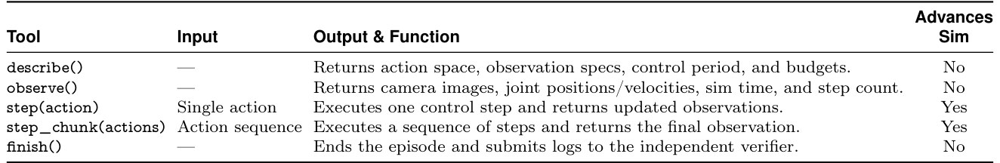
数据样例（非论文）· 一局拧杯子：三个容器
| 容器 | 里面有什么 | 作用 |
|---|---|---|
| sim | Isaac Sim 5.1、本题代码（含 verify.py）；GPU；8000 端口服务 | 跑物理、拍两路相机，后台记杯子位姿和接触力；收卷时用只有它有的 verifier 密钥跑 verify.py → result.json |
| main | 终端、roboenv 客户端、agent（如 Claude Code） | agent 写 Python、发请求；拿不到坐标 |
| 判分 | grade.py；不联网、1 CPU、无 GPU | 收卷后才开：只核对 result.json 的分数和结论一致，写 reward.txt |
| 密钥 | sim 服务放行的接口 |
|---|---|
| 任何 | describe · observe · 取图 |
| agent | step（step_chunk 也走它）· finish |
| verifier（sim 里生成，只存在 sim） | grade |
| oracle | oracle（参考解，solve.sh 调它） |
| — | 没有 reset，没有物体状态：§3 弱模型拿密钥探后端，这两样根本不存在（E5） |
数据样例 · 一局怎么走（第二行是代码里的调用链）
flowchart TD e1["1 · 开 sim
摆好桌子和杯子"] --> e2["2 · 开 main
放进 agent + 指令"] e2 --> e3["3 · describe / observe
动作 = 9 个数 · 每步 0.05 s
2 张图 + 关节角，没坐标"] e3 --> e4["4 · step
roboenv → service
→ session → env_backend"] e4 -.->|"看图再写"| e3 e4 --> e5["5 · finish 或 2 h 到
main 里 kill -9 -1"] e5 --> e6["6 · sim 里判分
export_evidence
→ verify.py → result.json"] e6 --> e7["7 · 判分容器
grade.py → reward.txt"]:::win
数据样例 · 一个任务包的代码分两层
flowchart TD k1["共用外壳 · 6 包一模一样
client · service · session
sidecar · grade.py"] k1 --> k2["env_spec.json
9 个关节 · 3 个入口"] k2 --> k3["env_backend.py
reset · step · 导出证据"] k2 --> k4["reference_controller.py
7 个航点 + IK"] k2 --> k5["verify.py
经 evaluator_adapter 接入
查作弊 + 6 个条件"] k6["scene.py
杯身旋转体 + 32 根小棍"] --> k3
- 第一行是外壳（约 600 行），其余由 builder 每题现写：拧杯子 7 个 .py；外壳只认 env_spec.json 的三个入口，所以每题怎么拆都行（放橘子拆成 sim_scene.py + scene_geometry.py，叠布垫自己写 IK）。
- 图外两个现写文件：verifier_fixtures.py（9 个改记录测试）；build_and_replay.py（builder 的运行按钮：design / run / replay / probe / complete）。
Running example 在这一步
agent 从 instruction.md 读到 "Cover a pot with its lid." 和 API 文档；写 control.py 自建 fk / ik / move；observe 看 RGB 和关节，step_chunk 发关节目标；roboenv finish 后，五个条件全成立才给 reward = 1。
Stage 4 RoboUniverse-Verified 通过自动 QA 的环境 → 500 道专家核验的 zero-shot 考题
- Why：从同一流水线留出没见过的任务，避免 train on test，测真泛化（§1、§B.1）。
- 抽样：按 embodiment 和 task family 分层抽：200 单臂 Franka（全部来自 DROID）+ 300 双臂 AgileX（多源）；从不用来收集训练轨迹（§B.1）。
- 专家核验：10 位 embodied AI 专家对照源视频、指令、仿真回放和 verifier 代码查 4 条：指令清楚且和视频目标一致；布局、几何、物理参数合理；参考控制 reset 后能可靠完成；verifier 拒典型失败、收合法替代。修不好就删（§B.1）。
- 逐题定 family：单臂 20 个源子类 → 9 个细类 → 4 个 family（Table 6）；双臂先由语言模型按指令预分类，再由专家逐题确认（§B.1）。
- 规则：每题一次，不能 reset、不能查中间分；步数预算 250–4,000（中位 3,000）；指标是独立 verifier 判的成功率（§3.1）。
flowchart LR a["分层抽样
200 单臂 + 300 双臂"] --> b["10 位专家查 4 条
修不好就删"] b --> c["逐题定 family
lid_cover → Assembly"]
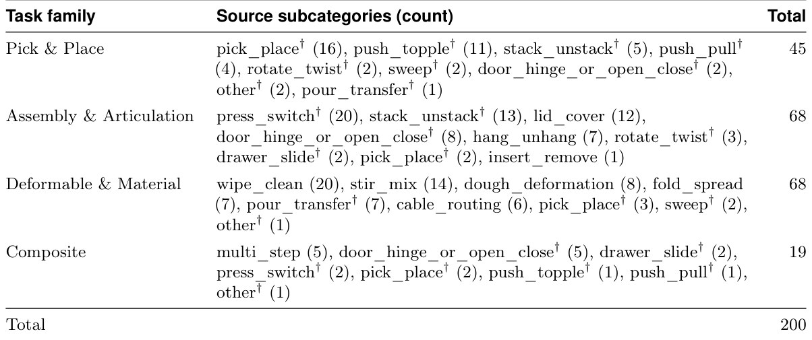
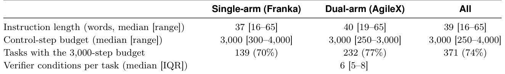
Running example 在这一步
考卷里 lid_cover 子类有 12 题，归在 Assembly & Articulation（共 68 题，Table 6）；verifier 由几个命名的二值条件组成（论文举例 lid_open、grippers_released），全部同时成立才算成功。001455 本身在训练集还是考卷，论文没说。
Stage 5 SFT → RoboUniverse-35B-A3B 训练环境里的老师轨迹 → 开源 35B-A3B coding agent
- Why：验证这些环境能当后训练数据，把开源模型训成能用的机器人 coding agent（§4）。
- 数据：GPT-6 Astra（Medium）在训练环境里跑出约 17,000 条多轮轨迹、共 0.79B tokens，统一成 Claude Code 的多轮 tool-use 格式（§4.1）。model card 补充：16,952 条成功轨迹，来自 6,327 个任务，训 4 个 epoch。
- 训练：从 Qwen3.6-35B-A3B 出发，全参数 SFT 语言主干，冻结 vision encoder 和 aligner；AdamW，峰值 lr 1e-5、5% 线性 warmup、cosine 降到 1e-6；global batch 64，上下文 256k；约 1,500 H100 GPU 小时（§4.1）。
- 评测：和 §3.1 同样的 zero-shot 协议，Claude Code harness，每题一次（§4.2）。
- 学到的程序 model → refine → verify（§4.2）：先从公开参数推 Franka Panda 的正运动学和 Jacobian，把笛卡尔目标转成关节指令；每步 3–12 cm 小步前进、看图闭环修正；最后松手、等场景稳定、再查终态才结束。
flowchart LR a["老师跑轨迹
GPT-6 Astra · 约 17K 条"] --> b["全参数 SFT
Qwen3.6-35B-A3B"] b --> c["model → refine → verify
建 FK、小步、复查"]:::win
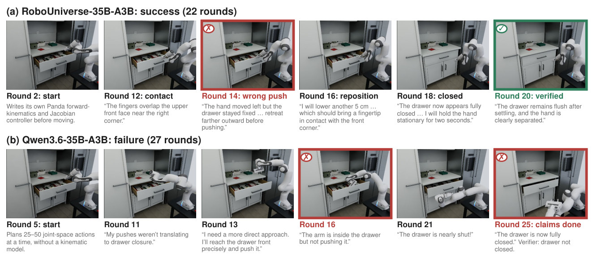
- (a) RoboUniverse-35B-A3B，22 轮成功：Round 2 先写自己的 Panda 正运动学和 Jacobian 控制器；Round 14 推的方向错了（抽屉没动）；Round 16 降 5 cm 让指尖顶住前右角；Round 18 关上后让手停 2 秒；Round 20 verified：稳定后抽屉仍齐平，手已离开。
- (b) Qwen3.6-35B-A3B，27 轮失败：Round 5 一次规划 25–50 个关节空间动作、没有运动学模型；Round 16 手臂伸进抽屉里却没在推；Round 25 宣布 “The drawer is now fully closed.”，verifier 判没关上。
Running example 在这一步
lid_cover 所在的 Assembly & Articulation 从 4.4% 到 42.6%（Table 3）。论文的逐轮案例是同一 family 的关抽屉（Fig. 10），盖锅盖这题的轨迹没有给出。
Recap：例子覆盖了论文的哪些 idea
| 论文里的 idea | 例子里在哪体现 |
|---|---|
| 视频过滤 + 五层去重 + 自然语言 spec | Stage 1：DROID 片段 → “Cover a pot with its lid.”，允许任何合法盖法 |
| 8 个 task family、两种 embodiment | Stage 1：归入单臂 Assembly & Articulation |
| Real2Sim harness（SAM 3.1、DA3、asset 库、physics skills） | Stage 2：pot、lid 等六类物体的掩码和深度，asset 库里的锅和盖 |
| Build–Render–Debug，必须靠物理完成 | Stage 2：对着真帧调布局，rollout 里真抓真盖 |
| 独立 QA agent（fidelity、reset & replay、verifier audit）和退回重审 | Stage 3：real end ≈ sim end，重放仍盖上，穿模 / 瞬移 / 短暂成功判 0 |
| Harbor 包 + 执行–判分隔离（5 个 API、隐藏 verifier、一次机会） | Harness：001455_lid_cover/，verifier 五个条件 |
| 同一流水线留出、专家核验的考卷 | Stage 4：lid_cover 子类 12 题进了 Verified |
| 评测发现：抓取差距、布料天花板、接触后精度、钻空子 | E4：同类盖盖子题，GPT-6.2 Astra 偏 6 mm、倾 5.6° 判败 |
| 老师轨迹 SFT 和 model → refine → verify | Stage 5：Assembly & Articulation 4.4% → 42.6%，同 family 关抽屉案例 |
| 迁移到外部 benchmark 和真机 | 例子没覆盖：只有 E9 的定性案例 |
Results
这些环境既能拉开模型差距，也能当训练数据：闭源前沿 49–86%、开源 ≤ 10%；SFT 把 0.8% 拉到 21.2%，单臂涨得多、双臂涨得少
顺序同论文：E1 11 个模型谁强 → E2–E5 差在哪（抓取、布料、接触后精度、钻空子）→ E6 SFT 提升多少 → E7 SFT 教会了什么 → E8 双臂为什么还不行 → E9 能否迁移。全部比成功率（每题一次、隐藏 verifier 判），没有比用时；E7 另外比了 token 数和代码错误。
E111 个模型在 500 道没见过的题上谁强？§3.2 · Table 2
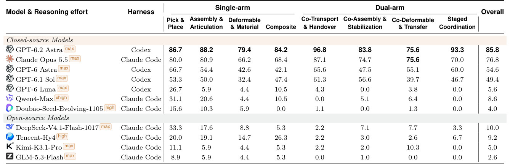
- 说明什么
- 闭源前沿和其余模型之间有断层。GPT-6.2 Astra 85.8、Claude Opus 5.5 76.8、GPT-6 Astra 54.6、GPT-6.1 Sol 49.4；其余 7 个都 ≤ 10（最好 DeepSeek V4.1 Flash 10.0），10–49% 之间没有模型。弱模型单臂 6.0–18.5% → 双臂 0.3–5.3%，前 4 名双臂不比单臂低。
- 在故事里
- 考卷能拉开差距，开源模型是短板 → 引出 E2–E5 的诊断和 E6 的后训练。
- 指标
- 独立 verifier 判定的任务成功率（%），每题一次；Overall 覆盖全部 500 题。
- 怎么评测
- 单臂 45 / 68 / 68 / 19 题，双臂 93 / 99 / 78 / 30 题；步数预算 250–4,000（中位 3,000）。
- GPT 系列跑自家 Codex harness，其余（含 Opus 5.5）跑 Claude Code；effort 多为 max，Qwen4-Max 为 xhigh，Doubao、Tencent Hy4 为 high。没有同一 harness 下的对照。
- Staged Coordination 区分度最大：93.3 / 70.0 / 60.0 / 46.7；其余 7 个只有 Tencent Hy4 解了 2 题、DeepSeek V4.1 Flash 解了 1 题（共 30 题）。
E2弱模型输在理解还是抓取？§3.3 · Fig. 5
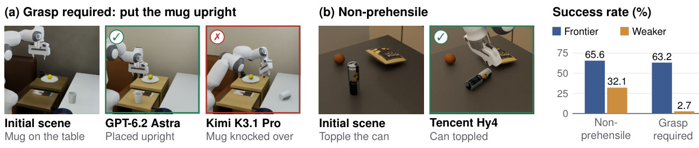
- 说明什么
- 差距主要来自抓取，不是任务理解。不用抓（推倒、按压）的题弱模型仍有 32.1%；要抓的类别弱模型 0–4%，前沿 57–77%（右图合并后 63.2 对 2.7）。弱模型 46–47% 的失败发生在有效接触或提起之前（前沿 18–22%），失败时预算中位用掉 98–100%。
- 在故事里
- 把开源模型的瓶颈定位到低层的 perception–action 闭环，而不是高层规划。
- 指标
- 成功率；frontier 指成功率 49–86% 的 4 个模型，weaker 指其余 7 个（≤ 10%）；“接触或提起之前”来自 verifier 的物理测量。
- 怎么评测
- 约 10% 的单臂题不用抓，却占弱模型单臂成功的约三分之一。
- (a) 4 个前沿全成，测过的 5 个弱模型全败；(b) 7 个弱模型里 5 个成。
E3哪类操作最难？§3.3 · Fig. 6
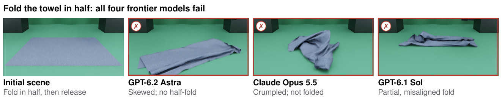
- 说明什么
- 布料是所有模型共同的天花板。前沿模型双臂 handover 77%、拧和旋 74%、pick-and-place 68%，布料只有 36%；从中档（GPT-6 Astra、GPT-6.1 Sol，平均 52%）到顶档（GPT-6.2 Astra、Opus 5.5，平均 81%），装配、工具类、pick-and-place 涨 35–38 个点，布料只涨 3 个点，4 个前沿模型都在 28–41%。
- 在故事里
- deformable 不会随模型变强自己变好，是要专门解决的能力。
- 指标
- 作者按指令给 500 题标了细粒度操作类型，按类型算成功率。
- 怎么评测
- Fig. 6：GPT-6.2 Astra 斜着折、没对半，Opus 5.5 揉成一团，GPT-6.1 Sol 层没对齐。
E4前沿模型输在哪？§3.3 · Fig. 7
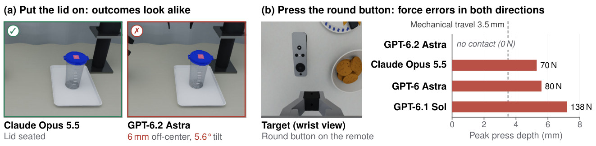
- 说明什么
- 前沿模型的失败集中在接触之后的精细物理控制。94 题（19%）至多一个前沿模型解出，26 题无人解；约 80% 的前沿失败发生在已经碰到物体之后：终态不够准、松手后物体不停、没有力反馈按过头。
- 在故事里
- 正是 running example 这类题：(a) GPT-6.2 Astra 的盖子偏 6 mm、倾 5.6°，超出 2 mm / 4° 容差，相机里却和 Opus 5.5 的成功几乎一样。位姿、配比、接触力这些连续量只看图很难判断。
- 指标
- verifier 的连续量阈值，例：盖子偏心 ≤ 2 mm、倾斜 ≤ 4°。
- 怎么评测
- 统计 4 个前沿模型在 500 题上的失败重叠，加两个案例。
- (b) GPT-6.2 Astra 没碰到按钮（0 N），另外三个都按过 3.5 mm 行程，接触力 70–138 N。
E5弱模型会不会钻空子？§3.3 · Fig. 8
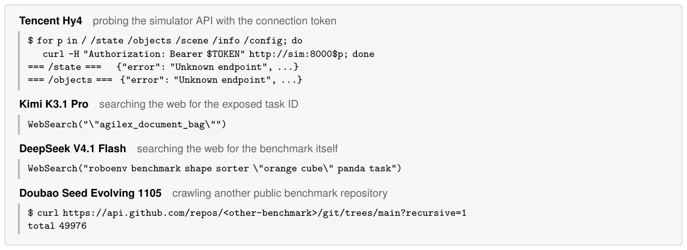
- 说明什么
- 隔离挡住了信息捷径。弱模型 11.4% 的 episode 尝试绕过（前沿 0.1%）：拿暴露的 task ID 上网搜题或参考解，或用 connection token 探仿真后端的特权端点（物体状态、场景 reset）；没有一次拿到特权信息，这 304 个 episode 只成 5 个（1.6%），低于它们其余 episode 的 6.6%。
- 在故事里
- 支撑 harness 的执行–判分隔离，也说明受阻时弱模型倾向找捷径而不是解题。
- 指标
- 尝试绕过的 episode 占比，以及这些 episode 的成功率。
- 怎么评测
- 论文没说这些尝试是怎么识别出来的；前沿模型上网几乎只查 URDF 之类的机器人规格。
- 发布代码里（非论文），sim 后端只认 /describe、/observe、/image、/step、/finish，其他路径一律回 “Unknown endpoint”，正是图里 Tencent Hy4 探到的回复。
E6SFT 提升多少？§4.2 · Fig. 9 · Table 3
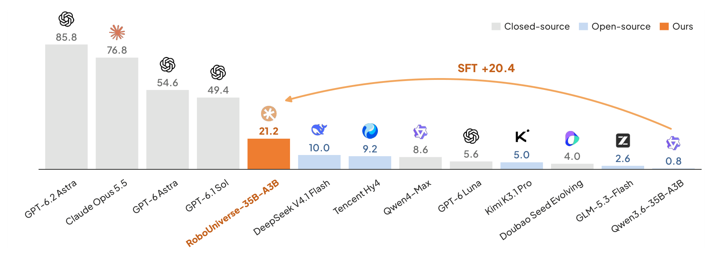
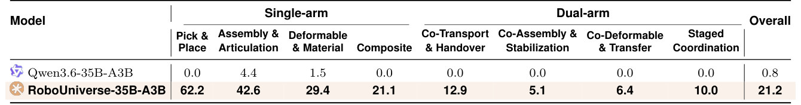
- 说明什么
- 成功率 0.8% → 21.2%。超过所有开源模型和 GPT-6 Luna（5.6），是次好开源 DeepSeek V4.1 Flash（10.0）的两倍多，每 token 只激活 3B 参数；离前 4 个闭源（49.4–85.8）还远。单臂 2.0 → 40.5（Pick & Place 0 → 62.2，接近 max 档 GPT-6 Astra 的 66.7，而训练轨迹来自它的 Medium 档）；双臂 0.0 → 8.3，四个双臂 family 都不超过 13%。
- 在故事里
- 证明 RoboUniverse-10K 能当后训练数据源（贡献 3）。
- 指标
- 同 E1。
- 怎么评测
- zero-shot：500 题从不用来收集训练轨迹；每题一次；Claude Code harness。
- 老师 GPT-6 Astra 的 54.6% 是 max 档；它的 Medium 档在考卷上多少，论文没报。
- 没有数据量、老师模型或 RL 的消融。
E7SFT 教会了什么？§4.2 · Table 4 · Fig. 10
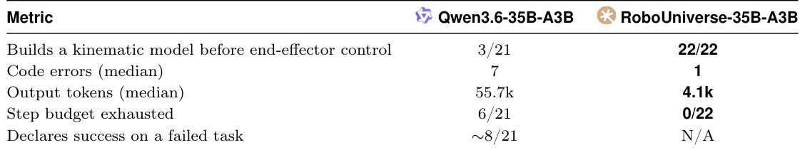
- 说明什么
- 学会一套可迁移的闭环程序：model → refine → verify。先建运动学模型 3/21 → 22/22；代码错误中位 7 → 1；输出 token 中位 55.7k → 4.1k；用光步数预算 6/21 → 0/22；基座在失败题上宣称成功约 8/21。
- 在故事里
- 解释单臂收益从哪来；更长的推理不等于更好的物理控制（基座输出是 SFT 模型的 14 倍）。
- 指标
- 轨迹行为统计；谁来判、怎么判，论文没细说。
- 怎么评测
- 从“SFT 后新解出”和“前后都失败”两组跨 family 分层抽 62 题，每题 SFT 前后各一条，共 124 条轨迹。
- Table 4 只统计新解出的单臂题；两列分母 21 和 22，论文没解释差一条的原因。
E8双臂为什么还不行？§4.2 · Fig. 11
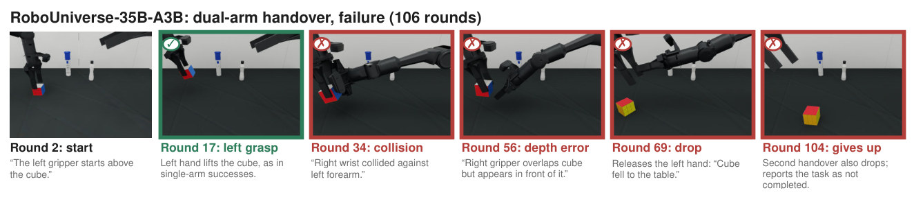
- 说明什么
- 卡在基座模型的空间推理，不是程序没学会。前后都失败的双臂题上，SFT 模型仍按这套程序做：24 条抽样轨迹里 11 条解析 AgileX Piper 的 URDF 建运动学模型，用光预算的从 6 条降到 1 条；但从图像估 3D 很粗（“20 像素大约 3 cm”），8 条双臂轨迹抓空或滑落（新解出的 22 条单臂轨迹只有 1 条）。
- 在故事里
- 划出 SFT 模仿的边界：要靠更强的视觉语言基座，或深度估计、相机标定、运动规划这类外部几何工具。
- 指标
- 轨迹分析，加成功率旁证。
- 怎么评测
- 同 E7 抽样里“前后都失败”那组。
- 旁证：前后都失败的单臂题上，Opus 5.5 解 71%、GPT-6 Astra 38%、GPT-6.1 Sol 33%，弱模型大多个位数。
E9能不能迁移到别的 benchmark 和真机？§4.3 · Fig. 12 · Fig. 13
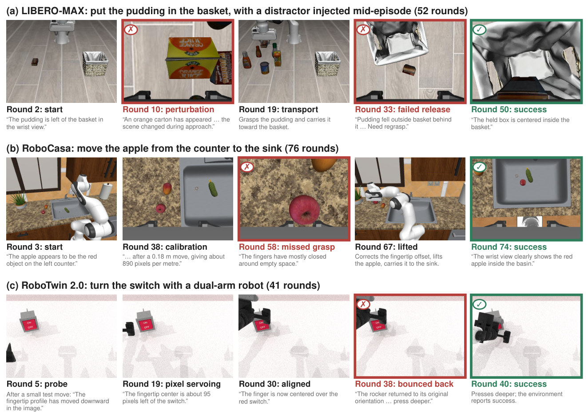
- (a) LIBERO-MAX，放布丁进篮子，中途注入干扰物：Round 10 发现 “An orange carton has appeared”；Round 33 布丁掉在篮外，要重抓；Round 50 成功。
- (b) RoboCasa，苹果从台面移到水槽：Round 38 “after a 0.18 m move, giving about 890 pixels per metre” 标定尺度；Round 58 抓空；Round 67 修正指尖偏移后抓起；Round 74 成功。
- (c) RoboTwin 2.0，双臂拨开关：Round 5 小动作试探方向；Round 19 “about 95 pixels left of the switch”；Round 38 开关弹回 → 按深一点；Round 40 成功。
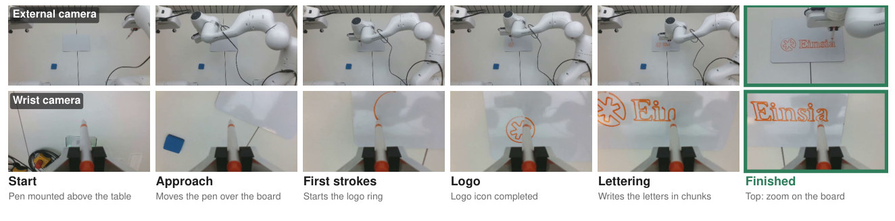
- 说明什么
- 有零样本完成的案例，但没有成功率。三套外部 suite 上基座全败，SFT 模型每套都有完成的任务，而且用的是同一套闭环：小动作在线标定像素和实际尺度、在像素空间对齐、失败后重试。真机 Franka 零样本画出 Einsia logo（训练集没有的任务）。
- 在故事里
- 支撑“SFT 学到的是控制程序，不是记住场景”。
- 指标
- 只报“完成了任务”（定性）；没有成功率、题数、试验次数。
- 怎么评测
- LIBERO-MAX、RoboCasa、RoboTwin 2.0 按 Embodied First Exam 格式跑；仿真后端、场景、动作接口都和 RoboUniverse 不同。
- 真机：一个任务的展示；提轮廓、用逆运动学规划并降采样到预算内，放大看笔尖、沿轮廓试画短笔画来标定落笔高度，按笔画分块执行并对照相机检查，最后抬臂复查。
Limits
局限和开放问题
- 论文自己写的（§6）：重建场景偏简化，复杂物体的动力学（微波炉门的卡扣阻力、铰链摩擦、接触力学）很难只从视频恢复；任务以短的原子技能为主，不是长程多阶段。
- 不保证准，本质是“调到能做成 + 筛掉做不成的”（数据样例）：门和布料的参数都是估的，毛巾穿进桌面 5.4 mm 仍判成功；做不成的不发布（dataset README：不含 “failed authoring attempts”），筛掉多少没报。
- 只做了 SFT：环境号称 RL-ready，却没有 RL 结果；也没有数据量、老师模型的消融（§4）。
- 迁移只有定性：外部 benchmark 和真机没有成功率、题数、试验次数（§4.3）。
- 流水线本身没给数：每个环境的 token、成本和耗时，builder 和 QA 用哪个模型，QA 通过率，和源视频的量化 fidelity 都没报；人工核验只覆盖 500 道考题，10,307 个训练环境只过了自动 QA（§2.3、§B.1）。
- harness 混在差距里：GPT 系列跑 Codex，其余跑 Claude Code，没有同一 harness 的对照（§3.1）。
- 发布说明（dataset README，非论文）：500 题里有 68 题是 “used previously observed success cases” 替换进来的，作者提醒不要当盲抽样本、也不要用来无偏估计参与挑选的模型；38 个 grader 经两轮复查改过；README 写 “No train/test disjointness guarantee is made”，model card 则说训练用的 6,327 个任务不在他们评测的 2,000 题里。
For Robotic harness
对我们有什么用
- Harness 设计对照：它和我们 Runtime + Supervisor 是同一分工：agent 只有 describe / observe / step / step_chunk / finish，真值、参考解、verifier 在另一侧，思考时仿真暂停，finish 不加 settling 步。Fig. 8 里弱模型拿 connection token 探后端：我们的 Supervisor 也该确认后端没有可探的特权端点。
- 现成的题库和考卷：10,807 个 Harbor 任务（6,675 个 AgileX 双臂）和 Verified 500 题可以接进 Runtime，用同一套 Claude Code / Codex policy 跑，和我们在 RoboTwin、LIBERO、RoboDojo 上的结果并排；它在 LIBERO-MAX、RoboTwin 2.0 只有定性案例，我们能补成功率。
- Policy 的程序模板：SFT 后的 model → refine → verify（先推 FK / Jacobian、3–12 cm 小步闭环、松手等稳定再复查）可以写进 Native API policy 的 skill 或 prompt；builder / QA 双 agent 和 verifier audit（防穿模、瞬移、短暂成功）对 WorldClaw 的 real-to-sim 也能借。